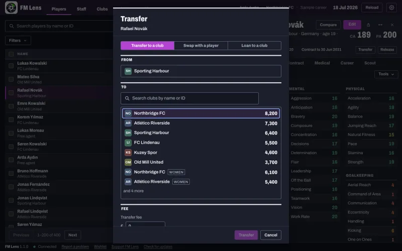

How to transfer a player in FM27
FM Lens asks FM to make the move, so it comes with a fee and an entry in his transfer history.
- Start FM from Steam, load a copy of your save and choose Connect in FM Lens.
- Open Players, search for the player and open him.
- Choose Transfer on his profile, then Transfer to a club.
- Search for the club he joins, and set the Transfer fee, Wage per week and Contract end.
- Choose Transfer, then check the move in FM.

Swap, loan or release
In the same window, Swap with a player trades him for a player at another club and Loan to a club sends him on loan. Release, beside Transfer on his profile, makes him a free agent.
Before you start
Edit a copy of your save. A move may not update every linked record in FM.